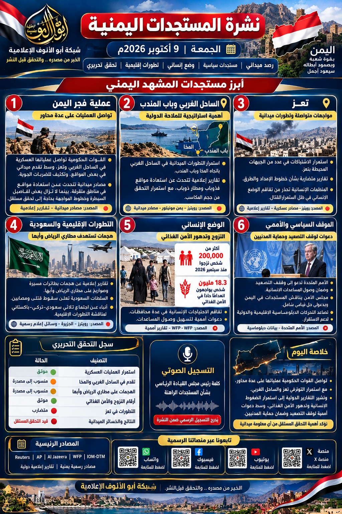

نشرة المستجدات اليمنية
شبكة أبو الأنوف الإعلامية — الخبر من مصدره.. والتحقق قبل النشر
النشرة المصوّرة


تنبيه تحريري: الصورة المرفقة تعرض موجزًا بصريًا. بعض التفاصيل الميدانية والأرقام الواردة فيها لم يتسنَّ تأكيدها جميعًا بصورة مستقلة؛ يرجى قراءة سجل التحقق والمصادر أدناه قبل إعادة نشر كل ادعاء بوصفه حقيقة محسومة.
مراجعة تحريرية للمعلومات الرئيسية
التصعيد الإقليمي والهجمات على المطارات السعودية
أفادت تقارير رويترز وأسوشيتد برس في 9 أكتوبر بمقتل ثلاثة أشخاص في هجمات استهدفت مطار الملك خالد الدولي في الرياض، وبوقوع أضرار وتعطّل في حركة الطيران. ونُسبت الهجمات إلى الحوثيين في تقارير إعلامية، بينما ينبغي إبقاء نسبة المسؤولية واضحة إلى الجهة التي أعلنتها أو إلى المصدر الناقل.
موثق بوسائل إعلام دولية؛ نسبة المسؤولية منسوبة للمصدرالنزوح والأمن الغذائي
ذكر برنامج الأغذية العالمي في تحديث منشور بتاريخ 2 أكتوبر 2026 أن أكثر من 149 ألف شخص نزحوا جراء تجدد القتال، وأن 18.3 مليون شخص في اليمن يواجهون انعدامًا حادًا في الأمن الغذائي. أما رقم «أكثر من 200 ألف نازح» الظاهر في الصورة، فيحتاج إلى إسناد مباشر لتقرير محدد بتاريخ واضح؛ لا ينبغي دمجه مع رقم البرنامج الأقدم دون توضيح اختلاف تاريخ التقدير والجهة.
18.3 مليون: مدعوم بمصدر أممي؛ أرقام النزوح مرتبطة بتاريخ ومصدر كل تقديرتعز والساحل الغربي وباب المندب
تغطيات رويترز وأسوشيتد برس تشير إلى تجدد القتال والتحركات المتنافسة على الساحل الغربي ومحيط باب المندب، مع روايات متعارضة بشأن السيطرة على بعض المواقع. لذلك تُعرض تفاصيل السيطرة الميدانية باعتبارها منسوبة إلى مصادرها، ولا تُعتمد كحقيقة نهائية دون تأكيد مستقل ومتعدد المصادر.
متغير ميدانيًا؛ يلزم تحديث مستمرالتطورات السياسية والإنسانية الأخرى
أي تصريحات رسمية أو أرقام إضافية في الصورة ينبغي ربطها بالبيان أو التقرير الأصلي، مع تاريخ النشر واسم الجهة. لا يكفي وضع اسم مؤسسة في التصميم لإثبات أنها أصدرت الرقم أو أكدت الواقعة.
يُراجع كل ادعاء على حدةسجل التحقق التحريري
| المعلومة | حالة التحقق | الملاحظة |
|---|---|---|
| مقتل ثلاثة أشخاص في هجمات استهدفت مطار الرياض يوم الخميس، وفق تقارير 9 أكتوبر | تدعمه تقارير مستقلة | راجِع رويترز وأسوشيتد برس؛ تُنسب تفاصيل المسؤولية إلى مصادرها. |
| 18.3 مليون شخص يواجهون انعدامًا حادًا في الأمن الغذائي | موثق لدى برنامج الأغذية العالمي | يُذكر اسم الجهة وتاريخ صفحة البيانات عند إعادة النشر. |
| أكثر من 200 ألف نازح منذ سبتمبر | يحتاج إلى توثيق مباشر | توجد تقديرات مختلفة بحسب تاريخ التقرير والجهة؛ لا تستخدم الرقم بلا رابط محدد. |
| السيطرة على مواقع في تعز والساحل الغربي وباب المندب | متغير / متنازع عليه | تُقارن الروايات وتُحدّث الحالة قبل النشر. |
| أي تفاصيل ميدانية أخرى غير مرتبطة بمصدر أصلي | قيد التحقق | لا تُعرض كحقيقة محسومة قبل تحقق مستقل. |
التصنيفات التحريرية: «موثق» يعني وجود مصدر موثوق يدعم المعلومة، ولا يعني بالضرورة تأكيد كل التفاصيل؛ «منسوب إلى مصدر» يحدد صاحب الادعاء؛ «متضارب» يعني اختلاف الروايات؛ «قيد التحقق» يعني عدم توافر أدلة كافية بعد.
مصادر مباشرة للمراجعة
- رويترز — هجمات مطار الرياض والتصعيد الإقليمي، 9 أكتوبر 2026
- أسوشيتد برس — هجمات مطار الرياض والتطورات الإقليمية، 9 أكتوبر 2026
- برنامج الأغذية العالمي — تفاقم الجوع والنزوح في اليمن، 2 أكتوبر 2026
- الجزيرة — بيانات عن الهجمات على مطاري أبها والرياض، 7 أكتوبر 2026
- المنظمة الدولية للهجرة — صفحة المؤسسة
يُفضّل إرفاق رابط التقرير المحدد بجوار كل خبر في النسخة النهائية، لا الاكتفاء بصفحة المؤسسة الرئيسية.
التسجيل الصوتي
لم يُرفق ملف صوتي مع هذه النسخة. عند إضافة الملف باسم audio-2026-10-09.mp3 إلى المستودع، يمكن إدراجه هنا:
ملف الصوت غير متوفر في النسخة المحفوظة.
إذا لم يكن الملف موجودًا في المستودع، فلن يعمل المشغل حتى يتم رفعه.
أرشيف النشرات
روابط الأعداد السابقة وفق الروابط المتاحة حاليًا:

تحقق من فتح كل رابط وأنه يعرض العدد المطابق للتاريخ قبل اعتماد الأرشيف نهائيًا.